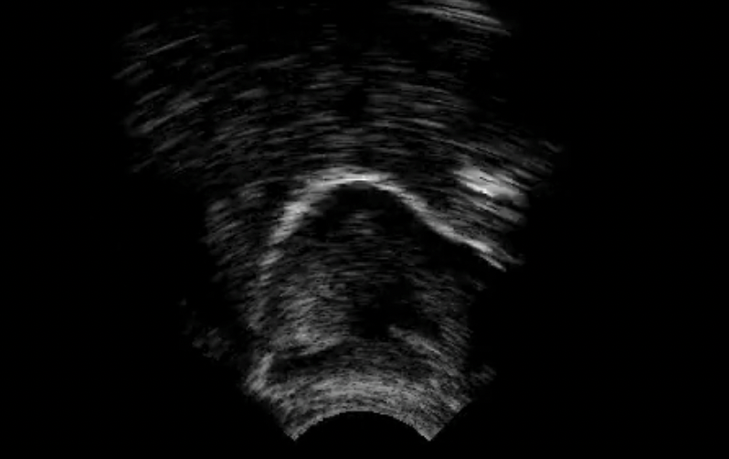
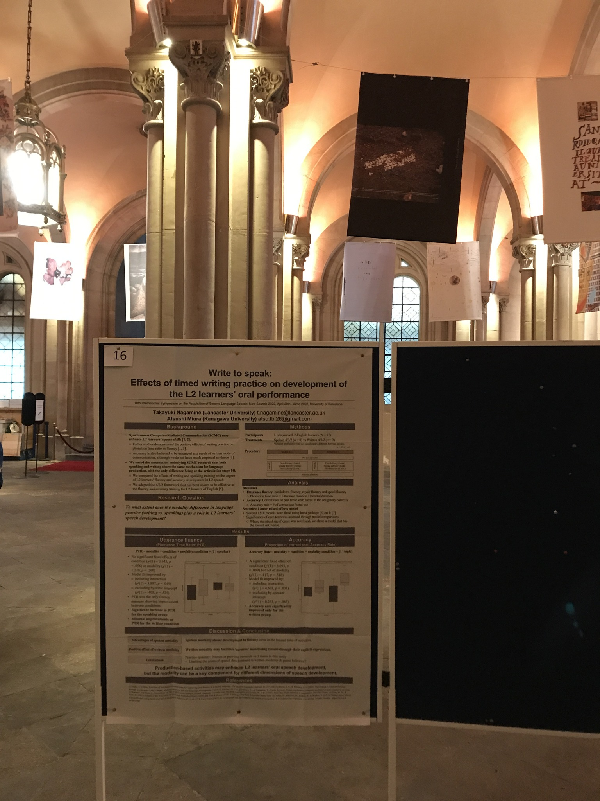

Research
L2 Articulatory/Acoustic Phonetics

My primary research focus is centred around phonetics of L2 speech production. I use acoustic and articulatory methods (ultrasound tongue imaging) to understand more about why L1 Japanese speakers struggle to produce English /l/ and /r/.
Peer-reviewed conference paper
Nagamine, T. forthcoming. Dynamic tongue movements in L1 Japanese and L2 English liquids. Proceedings of the 20th International Congress of Phonetic Sciences, 1-5.
 Nagamine, T. (2022) Acquisition of allophonic
variation in second language speech: An acoustic and articulatory study
of English laterals by Japanese speakers. Proc. Interspeech
2022, 644-648, https://doi.org/10.21437/Interspeech.2022-11020
Nagamine, T. (2022) Acquisition of allophonic
variation in second language speech: An acoustic and articulatory study
of English laterals by Japanese speakers. Proc. Interspeech
2022, 644-648, https://doi.org/10.21437/Interspeech.2022-11020
Conference presentation
Nagamine, T. accepted. Dynamic tongue movements in L1 Japanese and L2 English liquids. (Conference presentation). Accepted for the 20th International Congress of Phonetic Sciences (ICPhS), Prague Congress Centre, Prague, Czech Republic.
-
Nagamine, T. (2022, November 3-4). Acoustic,
perceptual and articulatory properties of second language speech; A case
of Japanese speakers’ production of the English /l r/ contrast.
(Conference presentation). Ultrafest X, University of Manchester,
Manchester, United Kingdom.
Nagamine, T. (2022, September 18-22). Acquisition of allophonic variation in second language speech: An acoustic and articulatory study of English laterals by Japanese speakers. (Conference presentation). Interspeech2022: The 2022 Conference of the International Speech Communication Association, Songdo ConvensiA, Incheon, South Korea.
Nagamine, T. & Suzuki, S. (2022, April 4-8). Dynamic phonetic correlates of liquid contrasts in Japanese speakers of English. (Conference presentation). BAAP 2022: Colloquium of the British Association of Academic Phoneticians, University of York (online), York, United Kingdom.
Miscellaneous
University press articles (in Japanese) when I brought the ultrasound machine to the undergraduate English Phonetics classes.
31 October 2022 at Meijo University, Aichi, Japan.
18 October 2022 at Kobe Gakuin University, Hyogo, Japan.
L2 pronunciation learning and teaching

As a second language English learner myself, I’m also interested in understanding how L2 learners could improve their pronunciation and listening skills. Specific interests include the use of technology in improving L2 fluency (with Atsushi Miura) and teaching of L2 listening within the world Englishes paradigm (with Prof. Yuri Nishio).
Peer-reviewed conference paper
-
Miura, A., & Nagamine, T. (2022). Using
synchronous computer-mediated communication to develop L2 learners’ oral
fluency. In J. Levis & A. Guskaroska (eds.), Proceedings of the
12th Pronunciation in Second Language Learning and Teaching
Conference, held June 2021 virtually at Brock University,
St. Catharines, ON. https://doi.org/10.31274/psllt.13347
-
Nagamine, T. (2020). Intelligibility of varieties of
English and listeners’ language learning backgrounds. In O. Kang, S.
Staples, K. Yaw, & K. Hirschi (Eds.), Proceedings of the 11th
Pronunciation in Second Language Learning and Teaching conference,
Northern Arizona University, September 2019 (pp. 261–269). Ames, IA:
Iowa State University. https://iastatedigitalpress.com/psllt/article/id/15430/
Conference presentation
Miura, A., & Nagamine, T.. (2023, August). Writing as your speaking practice tutor: Anatomizing the practice modality on L2 speaking training. (Poster presentation) British Association for Applied Linguistics (BAAL) 56th Annual Conference, University of York, York, United Kingdom.
Nagamine, T. & Nishio, Y. (2022, July 31). Vowels in Asian Englishes Speech: Acoustics, Functional Load, and Implications to the Listening Pedagogy. (Conference presentation) The 49th National Conference of the Japanese Association for Asian Englishes, online.
Nagamine, T. & Miura, A. (2022, April 20-22). Write to speak: Effects of timed writing practice on development of the L2 learners’ oral performance. (Poster presentation) NewSounds 2022: The 10th International Symposium on the Acquisition of Second Language Speech, University of Barcelona, Barcelona, Spain.
Miura, A., & Nagamine, T. (2021, June 18-19). Using synchronous computer-mediated communication to develop L2 learners’ oral fluency. (Poster presentation) Brock University (online), St. Catharines, Ontario, Canada.
For other research outputs, please see my researchmap page: